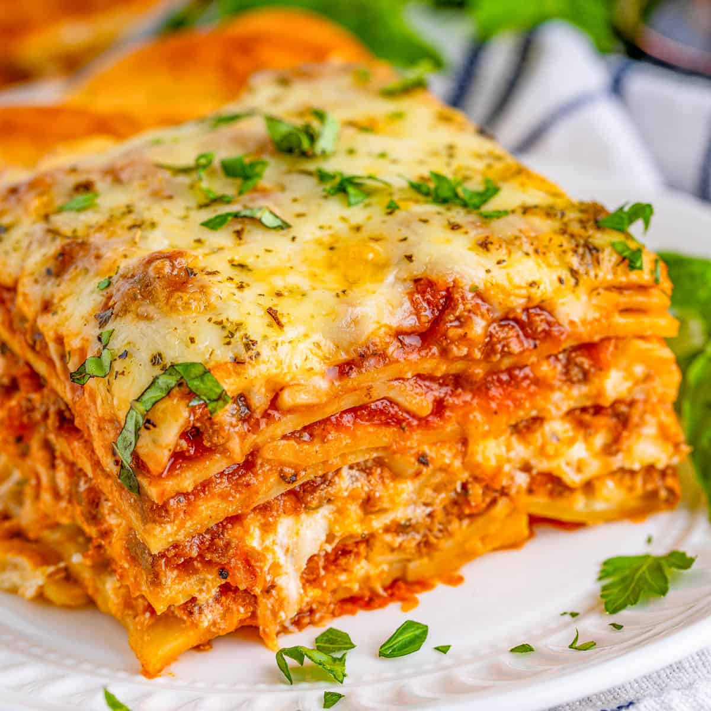

Description:
Lasagna is a type of wide, flat pasta, possibly one of the oldest types of pasta. Lasagna, or the singular
lasagna, commonly refers to a culinary dish made with stacked layers of pasta alternated with sauces and
ingredients such as meats, vegetables and cheese, and sometimes topped with melted
grated cheese. Typically, the cooked pasta is assembled with the other ingredients and then baked in an oven.
The resulting lasagna casserole is cut into single-serving square portions.
Ingredients
- 12 lasagna noodles
- 1 pound ground beef
- 1 pound Italian sausage (optional)
- 1 small onion, diced
- 3 garlic cloves, minced
- 2 cups marinara or tomato sauce
- 1 can (14.5 oz) diced tomatoes
- 2 tablespoons tomato paste
- 2 teaspoons Italian seasoning
- Salt and pepper, to taste
- 15 oz ricotta cheese
- 2 cups shredded mozzarella cheese
- 1/2 cup grated Parmesan cheese
- 1 egg, beaten
- 2 tablespoons fresh parsley, chopped (optional)
Instructions
- Preheat your oven to 375°F (190°C). Grease a 9x13-inch baking dish.
- Boil a large pot of salted water and cook lasagna noodles according to package instructions. Drain and set
aside.
- In a large skillet, cook ground beef and sausage over medium heat until browned. Drain excess fat.
- Add diced onion and garlic to the skillet and sauté until softened, about 3-4 minutes.
- Stir in marinara sauce, diced tomatoes, tomato paste, Italian seasoning, salt, and pepper. Simmer for 10-15
minutes, allowing the flavors to meld.
- In a mixing bowl, combine ricotta cheese, 1 1/2 cups mozzarella, 1/4 cup Parmesan, beaten egg, and parsley.
Stir until well mixed.
- Spread a thin layer of the meat sauce on the bottom of the prepared baking dish.
- Layer 4 lasagna noodles over the sauce, then spread one-third of the ricotta mixture on top. Add a layer of
meat sauce over the ricotta. Repeat layers twice more, ending with a layer of meat sauce on top.
- Sprinkle the remaining mozzarella and Parmesan cheeses on top of the final layer of sauce.
- Cover the dish with aluminum foil and bake in the preheated oven for 25 minutes. Remove the foil and bake
for an additional 20-25 minutes, until the cheese is melted and bubbly.
- Let the lasagna rest for 10-15 minutes before slicing and serving.
Enjoy your lasagna!